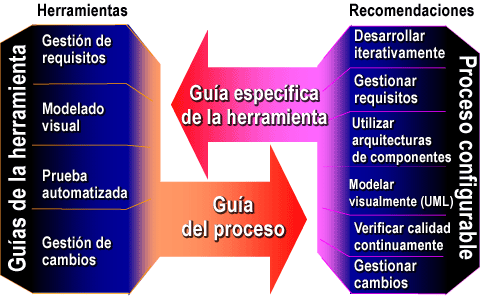

| Recomendaciones |
 |
|
Relaciones
| Contenido |
|---|
Descripción principal
Rational Unified Process® le muestra cómo aplicar diversas prácticas de ingeniería de software. Asimismo proporciona guía sobre cómo utilizar diversas herramientas para automatizar el proceso de ingeniería de software específico.  |
© Copyright IBM Corp. 1987, 2006. Reservados todos los derechos. |